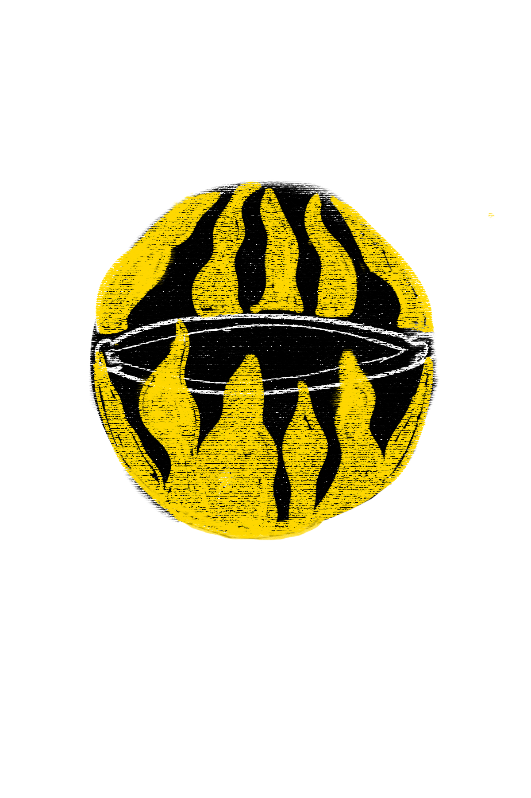

Bodas y platillos con Lourdes Hernández
En 1824 , el territorio de Colima y la entonces provincia de Guadalajara se declararon como dos estados federales totalmente independientes. Con este hecho, Jalisco se añadiría localidades como Tuxpan, Tolimán, Zapotitlán de Vadillo, Pihuamo y demás regiones que compartían con Colima una identidad cultural.
Sin embargo, los efectos de la cultura no entienden de líneas imaginarias y divisiones políticas. Aunque ahora nos podríamos pensar separados por un volcán hermoso pero harto de fotografías y metáforas en su honor, casi dos siglos después, la identidad del sur de Jalisco y Colima siguen siendo bastantes cercanas, manifestándose de manera contundente y particular, por sólo mencionar un hecho, en la confusión que hasta la fecha genera Pedro Páramo en los lectores locales, aguerridos a querer localizar un pueblo imaginario que nunca existió, sin entender que ese Comala lleno de muertos es la representación de todo un territorio.
Tenemos el mismo pasado y en el presente nos unimos a Jalisco a través de platillos, ingredientes, voces, biósfera, tradiciones y rituales. Somos un efecto similar a Tijuana y San Diego, aunque a nosotros no nos separa un visado. Así es nuestra naturaleza como sociedad, por diversos motivos siempre tendemos al separatismo y el 2020 ayudó a entender que se pueden llegar a situaciones que nunca desearíamos.
Pero ante los momentos adversos, el pensamiento comunitario no tarda en reivindicarse y las acciones más cotidianas, como la cocina, se convierten en espacios de defensa de nuestra colectividad.

Mi abuela se llamaba Raquel Nava y era originaria de Zapotitlán de Vadillo, Jalisco, aquí cerquita de Colima. En su pueblo creció viendo cómo las gentes humildes, cuando querían celebrar en grande una boda o un evento importante, se cooperaban con ingredientes, animales o manos para preparar festines y banquetes juntos. Lo que más se preparaba era mole de bodas, platillo bien importante y típico, más comido en los festejos de los acaudalados de los ranchos, por su costo.
Mi bisabuelo, el papá de mi abuela Raquel, murió en la guerra cristera y mia buela, cerca de 1940 y ya casada con mi abuelo, dejaron juntos su terruño y se fueron a vivir a El Remate.
En ese entonces, según los historiadores que he leído, El Remate era una pequeña Suiza del mundo rural, pues solía tener buenos servicios destinados para los trabajadores y familias de la extinta planta eléctrica, que dejó como ruinas los estanques, los acueductos que bajan por la barranca y las piezas grandes que están entre la maleza.
Mi abuela Raquel cocinaba para los trabajadores con el fin de ingresar un dinerito extra a la bolsa, pues aunque mi abuelo trabajaba en el campo, el dinero no llegaba hasta el final de la cosecha. Con el tiempo mi mamá y su hermana nacieron en El Remate y años después también yo.
Mi nombre es Lourdes Hernández, soy la hija mayor de mi mamá y nací en 1967, el mismo año que la planta dejó de funcionar. En 2016 presenté, en el Primer Festival Gastronómico de Comala, el mole de bodas que mi abuela Raquel me enseñó a cocinar y resulté ganadora en el concurso Rescatando la cocina típica de Comala. Desde esa bonita experiencia, me dedico a mostrar mi conocimiento del campo, la cocina y todo lo que mi abuela me enseñó.
Vivo en La Caja, un ejido a seis kilómetros de Comala y en medio trecho hacia El Remate. Mi cocina es un hermoso espacio bajo un árbol de tamarindo con fogones, hornos de barro, leña, metates, balsas y diversas plantas de las que poseo muy buen conocimiento. Este espacio lo estoy diseñando para hacer una pequeña escuelita de cocina tradicional.
Yo crecí, digamos, que entre los fogones de mi abuela y el campo. Así fue prácticamente mi niñez, los juegos de nosotros eran jugar a la comidita y a la cocinera. Más crecidita, estábamos encargadas de llevar, junto con otros chiquillos, el almuerzo a los jornaleros y ahí nos distraíamos viendo cómo trabajaban. Yo aprendí a amar al campo y la cocina como un juego, no como una obligación.
La vida del campo es bonita, entre la tranquilidad y la belleza de la naturaleza, ¡pero no te creas, eh!, mi familia y yo vivimos pobreza, pero no esa en la que tú pasas hambre. ¿Entienden?
Mi abuelo y mi papá fueron hombres que se dedicaron al campo y en El Remate de todo se daba: sembraban variedades de chiles serranos, güeros, pasillas y de árbol; variedades de jitomates, el llamado silvestre de riñón y un tomatito milpero, moradito y muy aromático que es bueno para las salsas. Sobre el maíz, también te puedo decir que lo conozco muy bien porque me enseñaron a aprovecharlos toda la temporada: desde bien tiernitos y así crudos, hasta bien sazones para usarlos en una preparación con leche y azúcar llamada Tamal colado.
Por su parte, mi abuela Raquel era muy cuidadosa en cómo alzaba y conservaba lo que venía de las tierras: antes nomás lo podías hacer con el fuego, con el humo, la sal y el vinagre. Fue ella mi primer contacto con la cocina, quien me enseñó a comprar, a darle punto a los platillos y de quien recibí los mejores consejos que me han dado.
Acerca de la cocina, el consejo más presente que tengo, es cuando me compartió su receta del mole de bodas: mi abuela decía que el mole tiene que saber a todo y a la vez a nada, que ningún ingrediente gane en sabor al otro. Por eso me gusta el mole, porque es unidad entre los ingredientes y festejo, se hace en momentos que son para disfrutar.

-A mí siempre me había llamado la atención el plato del mole, que era como un platillo especial , a lo mejor por lo complejo-.
Pensarán que hago mucho ruido por una receta tan popular, que se come en todas las cenadurías. Pero es que el mole de mi abuela es diferente, también es de sabor semi dulce, ¡pero eso sí!, no lleva tanta cosa: no le pongo pasas, ni galletas y no sé cuánto más. El mío es sencillo, ponemos chiles, ajos, chocolate, piloncillo, harina y diferentes olores machacados en el metate para aprovecharlos muy bien.
Me acuerdo de las memorias de mi abuela, era una muy bonita época la que nos contaba ella. En las bodas de antes, decía, se servían caldos y consomés riquísimos, calabacitas con cerdo o pipianes, pero el mero momento y el que la gente más esperaba, era el del mole, acompañado de su pieza de guajolote y su sopita de arroz.
Es muy bonito contarlo, pero no se confundan, no me considero una persona que viva del pasado, por eso creo que hay cosas que deberían recordarse como historias pero no vivirse en estos momentos, sobre todo para la mujer.
Te voy a contar que cuando una jovencita era pedida en matrimonio y esta aceptaba el ofrecimiento, la futura suegra encargaba a la novia tejer chiquihuites grandes, ¡enteros!, llenos de servilletas en punto de cruz y repartirlos entre las cuñadas, las tías, las amigas y cuanta mujer te pusiera la suegra en lista. El día de la misa, una dejaba los chiquihuites en las puertas de la iglesia para demostrarles que sí habías cumplido.
Pero además, la novia tenía que tejer el mantel para su propia mesa. Y si por algo no se cumplía, la penitencia era una forma de exhibición pública: de todas las demás mesas se encargaba la suegra de ponerles, pero a tu mesa, la mesa de la novia, no se le ponía nada.
-¡Si tu no hiciste el mantel, pues tu mesa iba a estar pelona!-.
Entonces lo que te digo, es que se me hace bonito recordar y a la vez pienso: qué bueno que ya no existe. ¿Por qué darte el valor como mujer por una servilleta?
A lo mejor algunas familias todavía lo usen en Zapotitlán, pero ya no es muy común. Así como el tejido, que ya no muchas mujeres de La Caja lo hacemos, hemos de ser unas tres quienes lo practicamos.
También te platico, había otras ocurrencias de aquellos años que a mi me causan un tipo de risa. De voz de mi abuela, escuché que cuando el padre de la novia no se sentía bien atendido durante la fiesta, en un acto de soberbia, metía su dedo a plato ajeno y manchaba de mole su costado izquierdo, como para que todos vieran que el padre no estaba siendo bien atendido.
Afortunadamente eso ya no me tocó en mi boda, pero tampoco comimos mole. Hubo un momento en el que la gente dejó de tejer las servilletas y eso que yo te contaba, pero también comenzaron a servir otras comidas en los eventos. Y todo esto a mí me hacía pensar: bueno, si gusta tanto el mole y tiene tantas historias, ¿por qué la gente ya no hace mole?
Yo creo que es a lo mejor por la desunión o a lo mejor que ya no te quiero pedir o ya no te quiero consultar, porque antes así era. En Zacualpan todavía se utiliza, no con el mole, pero pasa que la gente se junta para las fiestas y hacen unos fiestonones.
Después de ganar el concurso en 2016 comencé a viajar por algunas ciudades de la república, aprendiendo de otras cocineras en encuentros y cocinando en algunas ferias. Visité la Ciudad de México, Chiapas e Hidalgo y he conocido a cocineras como a la chef de Cevichería Tabasco, a Juana Bravo y otros referentes nacionales de la cocina tradicional, trabajadores de museos, historiadores y personas que me han ayudado mucho.
En mis viajes, me he percatado que la cocina tradicional y la identidad de Colima son aún desconocidas para el resto del país e incluso para los mismos colimenses, quienes regularmente pensamos que no existe una tradición propia. Las personas que conocí en los encuentros a los que asistí, preguntaban si Colima realmente es poseedor de una cocina auténtica y no es un producto de las regiones de alrededor.
No me dejarán mentir, que a diferencia de otras entidades de la república, como en Michoacán, Oaxaca o Chiapas, hasta hace unos años en Colima este movimiento de la cocina tradicional no estaba de moda. Primero hubo algunos chefs que comenzaron a promocionar platillos e ingredientes de nuestro territorio y después un grupo de cocineras tradicionales y yo, la mayoría de la parte norte del estado, comenzamos a organizarnos en el colectivo Mujeres de Fuego. Hemos realizado pláticas, vendimias y es una forma de mostrar nuestra cocina.
Ahora yo tengo bien fijo lo que quiero dar a conocer: no en sí la pura receta de una comida u otra, sino que conozcan las raíces, la cultura, la forma en como te puedes alimentar de una manera donde no necesites tanto. Que estén presentes porque yo creo que es una forma de subsistencia.
En estos tiempos de tanta pandemia y tanta crisis, no le tengo miedo al hambre, sé que yo y los míos vamos a estar bien, porque hemos aprendido a aprovechar y conocer lo que la tierra nos ofrece. Nosotros sin luz ni internet no nos paralizamos, sabemos guardar las hortalizas en balsas con ceniza del fogón, sé curar la carne cruda con sal y humo, sé hacer una tortilla y en todo este conocimiento, yo veo una oportunidad.
-A lo mejor son técnicas muy rudimentarias, a lo mejor nadie va a poner un fogón en su casa, porque no se puede, pero de menos que lo sepas-.
Si quieres saber más de mi y seguir mis publicaciones, puedes agregarme en Facebook.